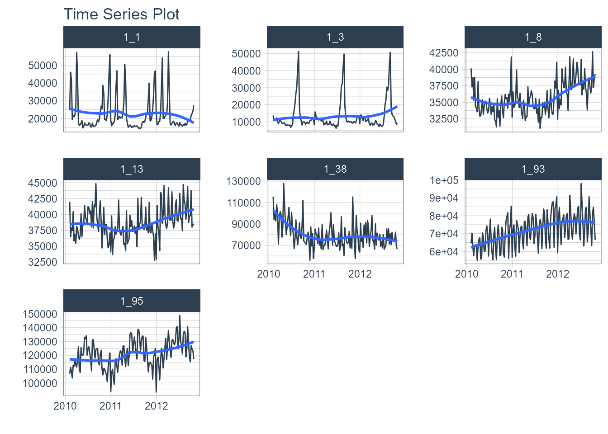
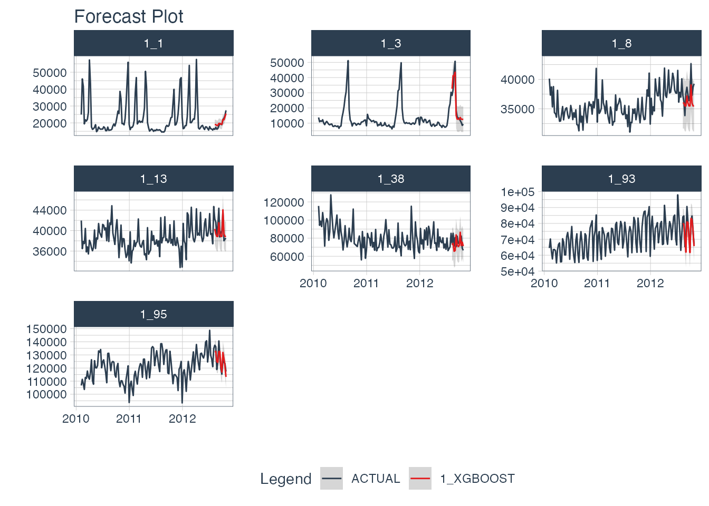

Modeltime is designed for modeling Panel Data. In this short tutorial, we will explain what Panel Data Modeling is and demonstrate how to use the Modeltime Forecasting Workflow for multi-time series datasets (Panel Data).
Problem: Forecast Iteration is Not Scalable
Time series are increasing at an exponential rate. Organization-wide forecasting demands have changed from top-level to bottom-level forecasting, which has increased the number of forecasts that need to be made from the range of 1-100 to the range of 1,000-10,000.
Think of forecasting by customer for an organization that has 10,000 customers. It becomes a challenge to make these forecasts one at a time in an iterative approach. As that organization grows, moving from 10,000 to 100,000 customers, forecasting with an iterative approach is not scalable.
Modeltime has been designed to take a different approach using Panel Data and Global Models (more on these concepts shortly). Using these approaches, we can dramatically increase the scale at which forecasts can be made. Prior limitations in the range of 1,000 to 10,000 forecasts become managable. Beyond is also possible with clustering techniques and making several panel models. We are only limited by RAM, not modeling time.
What are Panel Data and Global Models?
In it’s simplest form, Panel Data is a time series dataset that has more than one series. Each time series is stacked row-wise (on-top) of each other.

Panel Data Structure
Traditional modeling techniques like ARIMA can only be used on one time series at a time. The widely accepted forecasting approach is to iterate through each time series producing a unique model and forecast for each time series identifier. The downside with this approach is that it’s expensive when you have many time series. Think of the number of products in a database. As the number of time series approaches the range of 1000-10,000, the iterative approach becomes unscalable.
Problem: 1000 ARIMA Models Needed for 1000 Time Series
Global Models are alternatives to the iterative approach. A Global Model is a single model that forecasts all time series at once. Global Models are highly scalable, which solves the problem of 1-10,000 time series. An example is an XGBoost Model, which can determine relationships for all 1000 time series panels with a single model.
Solution: A Single XGBOOST Model can Model 1000 Time Series
The downside is that an iterative approach can be more accurate. To improve accuracy, feature engineering and localized model selection by time series identifier become critical to large-scale forecasting success. If interested, I teach proven feature engineering techniques in my Time Series Forecasting Course.
Modeling Panel Data
Modeltime is Designed for Panel Data
While Modeltime can perform iterative modeling, Modeltime has been designed for Panel Data using:
Global Modeling: Global model Machine Learning and Deep Learning strategies using the Modeltime Ecosystem (e.g.
modeltime,modeltime.h2o, andmodeltime.gluonts).Feature Engineering: Developing calendar features, lagged features, and other time-based, window-based, and sequence-based features using
timetk.Local Forecast Visualization: Visualizing multiple local time series forecasts at once.
Global and Localized Accuracy Reporting: Generating out-of-sample accuracy both globally and at a local level by time series identifier (available in
modeltime>= 0.7.0)Global and Localized Confidence Intervals Reporting: Generating out-of-sample confidence intervals both globally and at a local level by time series identifier (available in
modeltime>= 0.7.0)
Short Tutorial on Panel Data
We’ll cover a short tutorial on modeling panel data with the walmart_sales_weekly dataset.
Collect data
Next, collect the walmart_sales_weekly dataset. The dataset consists of 1001 observations of revenue generated by a store-department combination on any given week. It contains:
- 7 Time Series Groups denoted by the “ID” column
- The data is structured in Panel Data format
- The time series groups will be modeled with a single Global Model
data <- walmart_sales_weekly %>%
select(id, Date, Weekly_Sales) %>%
set_names(c("ID", "date", "value"))
data
#> # A tibble: 1,001 × 3
#> ID date value
#> <fct> <date> <dbl>
#> 1 1_1 2010-02-05 24924.
#> 2 1_1 2010-02-12 46039.
#> 3 1_1 2010-02-19 41596.
#> 4 1_1 2010-02-26 19404.
#> 5 1_1 2010-03-05 21828.
#> 6 1_1 2010-03-12 21043.
#> 7 1_1 2010-03-19 22137.
#> 8 1_1 2010-03-26 26229.
#> 9 1_1 2010-04-02 57258.
#> 10 1_1 2010-04-09 42961.
#> # … with 991 more rowsVisualize the Data
From visualizing, the weekly department revenue patterns emerge. Most of the series have yearly seasonality and long-term trends.
data %>%
group_by(ID) %>%
plot_time_series(
.date_var = date,
.value = value,
.facet_ncol = 3,
.interactive = FALSE
)
Train/Test Splitting
We can split the data into training and testing sets using time_series_split(). We’ll investigate the last 3-months of the year to test a global model on a 3-month forecast. The message on overlapping dates is to let us know that multiple time series are being processed using the last 3-month window for testing.
splits <- data %>% time_series_split(assess = "3 months", cumulative = TRUE)
#> Using date_var: date
#> Data is not ordered by the 'date_var'. Resamples will be arranged by `date`.
#> Overlapping Timestamps Detected. Processing overlapping time series together using sliding windows.
splits
#> <Analysis/Assess/Total>
#> <917/84/1001>Recipe
We can move to preprocessing the data. We will use the recipes workflow for generating time series features. This results in 37 derived features for modeling. We can certainly include more features such as lags and rolling features, which are covered in the High-Performance Time Series Course.
rec_obj <- recipe(value ~ ., training(splits)) %>%
step_mutate(ID = droplevels(ID)) %>%
step_timeseries_signature(date) %>%
step_rm(date) %>%
step_zv(all_predictors()) %>%
step_dummy(all_nominal_predictors(), one_hot = TRUE)
summary(prep(rec_obj))
#> # A tibble: 38 × 4
#> variable type role source
#> <chr> <chr> <chr> <chr>
#> 1 value numeric outcome original
#> 2 date_index.num numeric predictor derived
#> 3 date_year numeric predictor derived
#> 4 date_year.iso numeric predictor derived
#> 5 date_half numeric predictor derived
#> 6 date_quarter numeric predictor derived
#> 7 date_month numeric predictor derived
#> 8 date_month.xts numeric predictor derived
#> 9 date_day numeric predictor derived
#> 10 date_mday numeric predictor derived
#> # … with 28 more rowsMachine Learning
We’ll create an xgboost workflow by fitting the default xgboost model to our derived features from our in-sample training data set.
Training the global xgboost model takes approximately 50 milliseconds.
Conversely, an ARIMA model might take several minutes to iterate through possible parameter combinations for each of the 7 time series.
# Workflow
wflw_xgb <- workflow() %>%
add_model(
boost_tree() %>% set_engine("xgboost")
) %>%
add_recipe(rec_obj) %>%
fit(training(splits))
wflw_xgb
#> ══ Workflow [trained] ══════════════════════════════════════════════════════════
#> Preprocessor: Recipe
#> Model: boost_tree()
#>
#> ── Preprocessor ────────────────────────────────────────────────────────────────
#> 5 Recipe Steps
#>
#> • step_mutate()
#> • step_timeseries_signature()
#> • step_rm()
#> • step_zv()
#> • step_dummy()
#>
#> ── Model ───────────────────────────────────────────────────────────────────────
#> ##### xgb.Booster
#> raw: 58.3 Kb
#> call:
#> xgboost::xgb.train(params = list(eta = 0.3, max_depth = 6, gamma = 0,
#> colsample_bytree = 1, colsample_bynode = 1, min_child_weight = 1,
#> subsample = 1, objective = "reg:squarederror"), data = x$data,
#> nrounds = 15, watchlist = x$watchlist, verbose = 0, nthread = 1)
#> params (as set within xgb.train):
#> eta = "0.3", max_depth = "6", gamma = "0", colsample_bytree = "1", colsample_bynode = "1", min_child_weight = "1", subsample = "1", objective = "reg:squarederror", nthread = "1", validate_parameters = "TRUE"
#> xgb.attributes:
#> niter
#> callbacks:
#> cb.evaluation.log()
#> # of features: 37
#> niter: 15
#> nfeatures : 37
#> evaluation_log:
#> iter training_rmse
#> 1 46315.141
#> 2 33001.734
#> ---
#> 14 3676.542
#> 15 3373.945Modeltime Workflow
We’ll step through the modeltime workflow, which is used to test many different models on the time series and organize the entire process.
Modeltime Workflow
Create a Modeltime Table
model_tbl <- modeltime_table(
wflw_xgb
)
model_tbl
#> # Modeltime Table
#> # A tibble: 1 × 3
#> .model_id .model .model_desc
#> <int> <list> <chr>
#> 1 1 <workflow> XGBOOSTCalibrate by ID
A new feature in modeltime 0.7.0 is the ability to calibrate by each time series. Calibration calculates the out of sample residual error.
calib_tbl <- model_tbl %>%
modeltime_calibrate(
new_data = testing(splits),
id = "ID"
)
calib_tbl
#> # Modeltime Table
#> # A tibble: 1 × 5
#> .model_id .model .model_desc .type .calibration_data
#> <int> <list> <chr> <chr> <list>
#> 1 1 <workflow> XGBOOST Test <tibble [84 × 5]>Measure Accuracy
Next, we measure the global and local accuracy on the global model.
Global Accuracy
The default is modeltime_accuracy(acc_by_id = FALSE), which returns a global model accuracy.
calib_tbl %>%
modeltime_accuracy(acc_by_id = FALSE) %>%
table_modeltime_accuracy(.interactive = FALSE)| Accuracy Table | ||||||||
|---|---|---|---|---|---|---|---|---|
| .model_id | .model_desc | .type | mae | mape | mase | smape | rmse | rsq |
| 1 | XGBOOST | Test | 3254.56 | 7.19 | 0.1 | 7 | 4574.52 | 0.98 |
Local Accuracy
By toggling modeltime_accuracy(acc_by_id = TRUE), we can obtain the local model accuracy. This can be useful for identifying specifically which time series the model does well on (and which it does poorly on). We can then apply model selection logic to select specific global models for specific IDs.
calib_tbl %>%
modeltime_accuracy(acc_by_id = TRUE) %>%
table_modeltime_accuracy(.interactive = FALSE)| Accuracy Table | |||||||||
|---|---|---|---|---|---|---|---|---|---|
| .model_id | .model_desc | .type | ID | mae | mape | mase | smape | rmse | rsq |
| 1 | XGBOOST | Test | 1_1 | 1138.25 | 6.19 | 0.85 | 5.93 | 1454.25 | 0.95 |
| 1 | XGBOOST | Test | 1_3 | 3403.81 | 18.47 | 0.57 | 16.96 | 4209.29 | 0.91 |
| 1 | XGBOOST | Test | 1_8 | 1891.35 | 4.93 | 0.86 | 5.07 | 2157.43 | 0.55 |
| 1 | XGBOOST | Test | 1_13 | 1201.11 | 2.92 | 0.53 | 2.97 | 1461.49 | 0.60 |
| 1 | XGBOOST | Test | 1_38 | 8036.27 | 10.52 | 0.99 | 10.64 | 8955.32 | 0.02 |
| 1 | XGBOOST | Test | 1_93 | 3493.69 | 4.50 | 0.34 | 4.64 | 4706.68 | 0.78 |
| 1 | XGBOOST | Test | 1_95 | 3617.45 | 2.83 | 0.46 | 2.83 | 4184.46 | 0.72 |
Forecast the Data
The last step we’ll cover is forecasting the test dataset. This is useful to evaluate the model using a sampling of the time series within the panel dataset. In modeltime 0.7.0, we now have modeltime_forecast(conf_by_id = TRUE) to allow the confidence intervals (prediction intervals) to be calculated by time series identifier. Note, that the modeltime_calibrate() must have been performed with an id specified.
calib_tbl %>%
modeltime_forecast(
new_data = testing(splits),
actual_data = bind_rows(training(splits), testing(splits)),
conf_by_id = TRUE
) %>%
group_by(ID) %>%
plot_modeltime_forecast(
.facet_ncol = 3,
.interactive = FALSE
)
Summary
We just showcased the Modeltime Workflow for Panel Data using a Global XGBOOST Model. But, this is a simple problem. And, there’s a lot more to learning time series:
- Many more algorithms
- Feature Engineering for Time Series
- Ensembling
- Machine Learning
- Deep Learning
- Scalable Modeling: 10,000+ time series
Your probably thinking how am I ever going to learn time series forecasting. Here’s the solution that will save you years of struggling.
Take the High-Performance Forecasting Course
Become the forecasting expert for your organization
High-Performance Time Series Course
Time Series is Changing
Time series is changing. Businesses now need 10,000+ time series forecasts every day. This is what I call a High-Performance Time Series Forecasting System (HPTSF) - Accurate, Robust, and Scalable Forecasting.
High-Performance Forecasting Systems will save companies by improving accuracy and scalability. Imagine what will happen to your career if you can provide your organization a “High-Performance Time Series Forecasting System” (HPTSF System).
How to Learn High-Performance Time Series Forecasting
I teach how to build a HPTFS System in my High-Performance Time Series Forecasting Course. You will learn:
-
Time Series Machine Learning (cutting-edge) with
Modeltime- 30+ Models (Prophet, ARIMA, XGBoost, Random Forest, & many more) -
Deep Learning with
GluonTS(Competition Winners) - Time Series Preprocessing, Noise Reduction, & Anomaly Detection
- Feature engineering using lagged variables & external regressors
- Hyperparameter Tuning
- Time series cross-validation
- Ensembling Multiple Machine Learning & Univariate Modeling Techniques (Competition Winner)
- Scalable Forecasting - Forecast 1000+ time series in parallel
- and more.
Become the Time Series Expert for your organization.